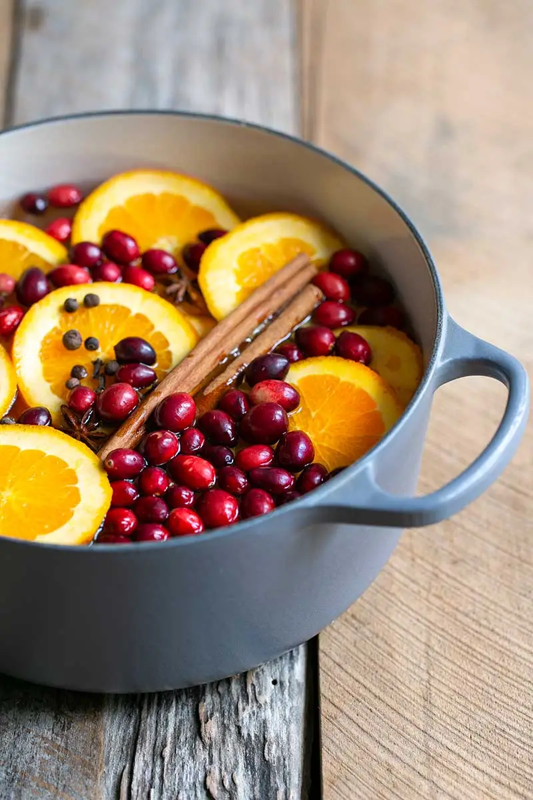

Spiced Orange Potpourri (Non-Food)

Description
It's old fashioned, it's comforting, it makes the kitchen smell wonderful and it's good for the soul.
Instead of throwing out your orange peels, put them to good use in your crock pot! I love how this mixture of orange peels and spices fills my home with a warm, inviting aroma. Making your own potpourri can't get any easier than this! Even better--it's non-toxic!
Ingredients
- 3 oranges, peels of
- 6 cloves, whole
- 1/2 teaspoon cinnamon, ground (or 1/2 cinnamon stick)
- 1/4 teaspoon ginger, ground (or 1/2-inch nub, grated)
- 1/4 teaspoon nutmeg, ground (or freshly ground)
- 1 cup water
Steps
- Into a small crock pot, place orange peels, cloves, cinnamon, ginger, and nutmeg.
- Pour water over all.
- Set on low heat for the entire day, checking the water level periodically to prevent burning.
- You can even enjoy it for one more day if you like. Just place the cooled mixture into a container, refrigerate and reheat another day (which is what I do often).
Home page